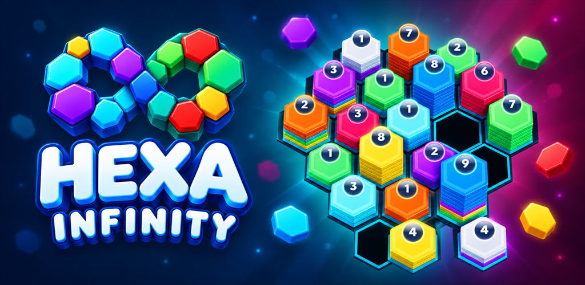

Rede Acadêmica
Um hub para encontrar artigos sobre Altamira e região, publicados de 1990 a 2026 e filtrados por temas.
Iniciativas criadas no coração do Xingu para movimentar quem vive, planta, aprende e cuida da cidade.
Um hub para encontrar artigos sobre Altamira e região, publicados de 1990 a 2026 e filtrados por temas.
Profissionais por especialidade e mapa de exames nas clínicas da cidade: medicina, odonto, fisio, psicologia, nutrição e mais.
O bairro Brasília no bolso: comércio, avisos, obituário, classificados e informação de vizinho para vizinho.
Rotas conectadas a experiências, natureza, comunidades e estabelecimentos que fazem parte do caminho.
Produção familiar regularizada direto para a demanda urbana, com venda e entrega fresca na cidade.
Estamos criando novas formas de explorar ideias, sistemas e desafios. É uma área viva em construção — e já tem um jogo pronto para você testar no navegador.
Um quebra-cabeça 3D relaxante e inteligente onde você organiza e combina peças hexagonais de cores vibrantes. Teste suas habilidades lógicas agora mesmo!
▶ Jogar agora no navegador ↗
Em desenvolvimento: novas simulações interativas e fases experimentais chegam em breve.
Conheça os apps da Pulso Dev: tecnologia criada por aqui para transformar a cidade e conectar nossa gente.